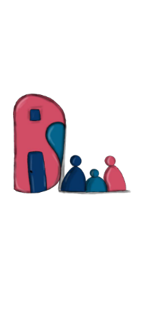
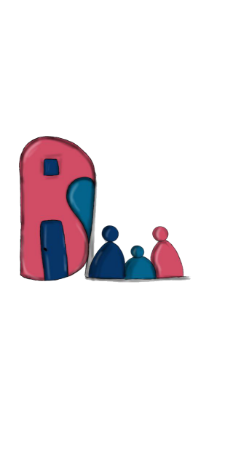
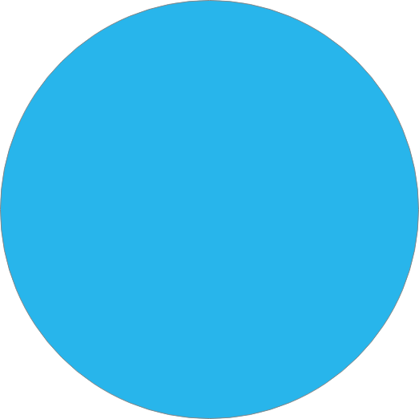
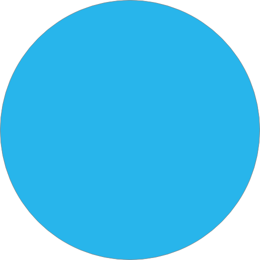

Home
About
Features

Home
About
Features
Byte Sized Life
 

1- Sign Language for babies:
Sign language for children aged 0-3 is one
of the most
effective ways to teach your child how to
express his needs and how he feels .....more info
Video
2- fun learning ideas:
Sing together ,Painting and drawing ,Hands-on
games ,
Reading books of all kinds together ... more info